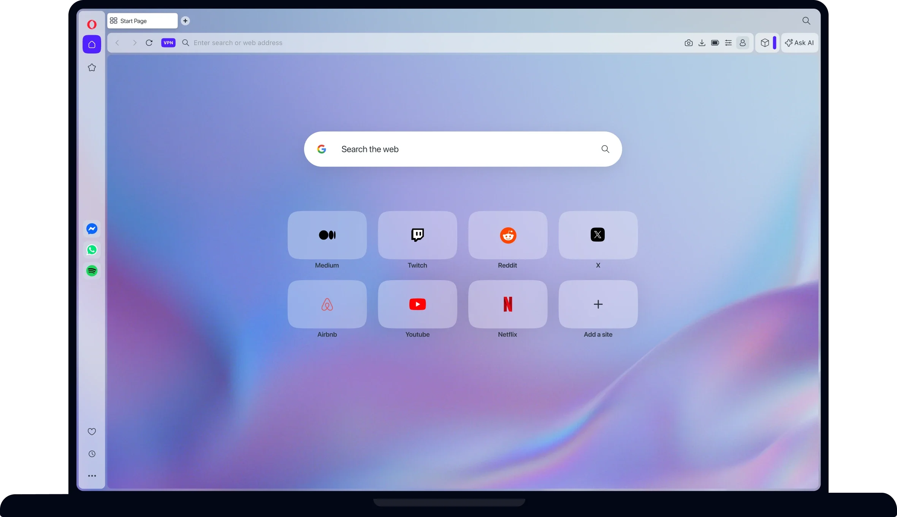
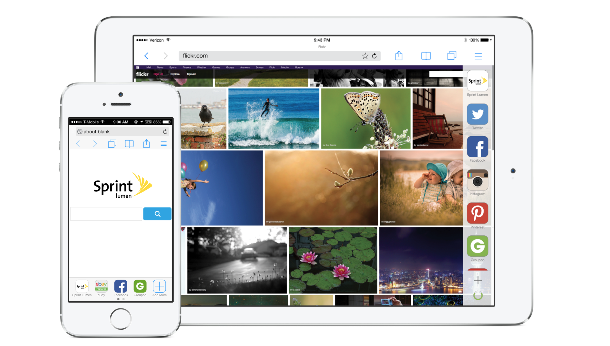
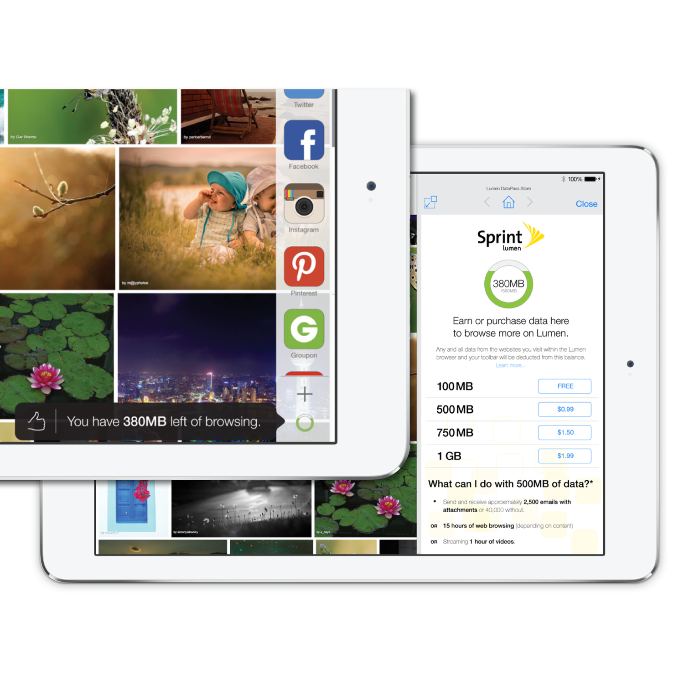
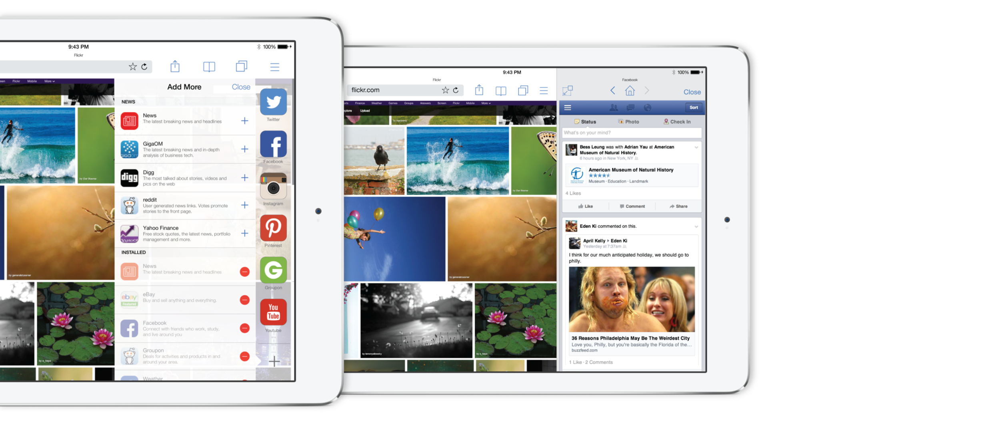
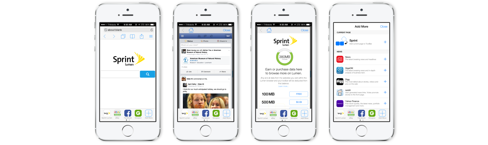

Opera × Sprint Toolbar
Opera Software

Developed during my time at Opera, I led conceptual proposals for a partnership with mobile carrier Sprint to build a customizable toolbar widget into an iOS-based browser. Users could add and rearrange their own shortcuts directly in the toolbar — an idea that ended up setting the precedent still visible in Opera's desktop browser design today.

Carrier Integration
The widget would also include information linked to the user's cellphone plan with the carrier. The user would get notifications of their data plan and quick links to the carrier's site in order to top-up on data.



\\\